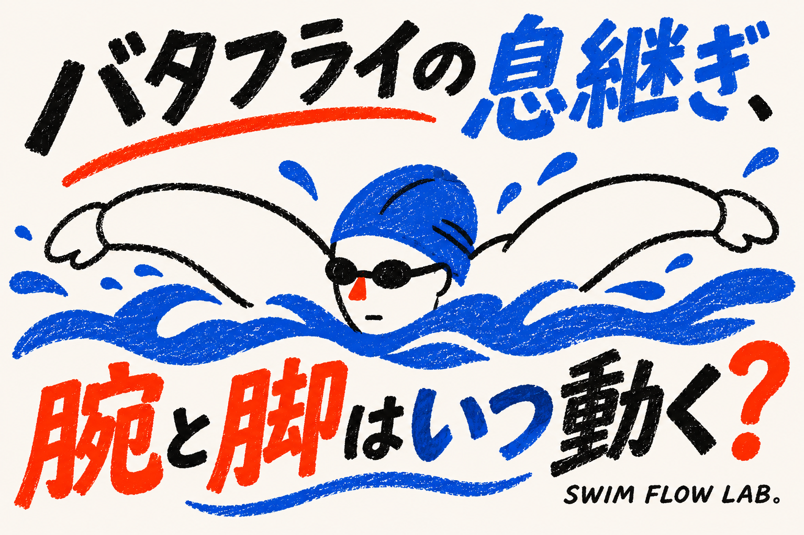
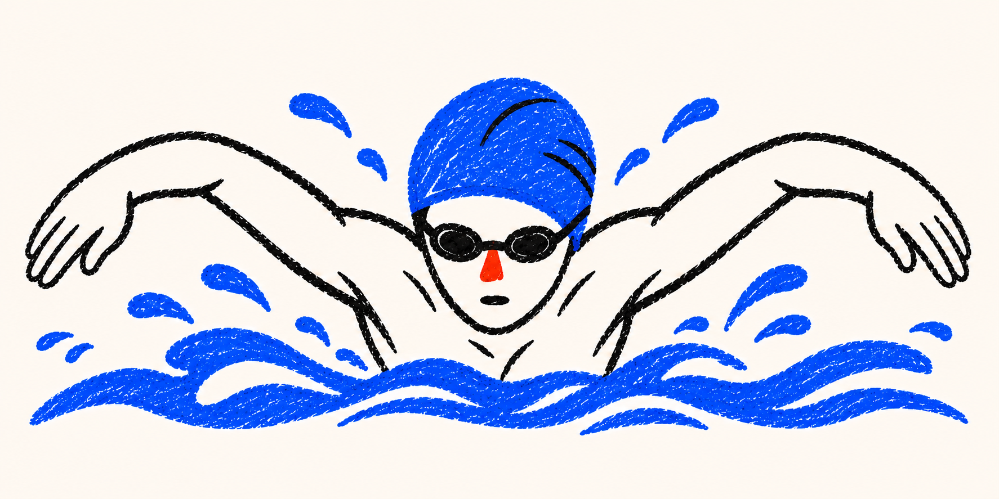
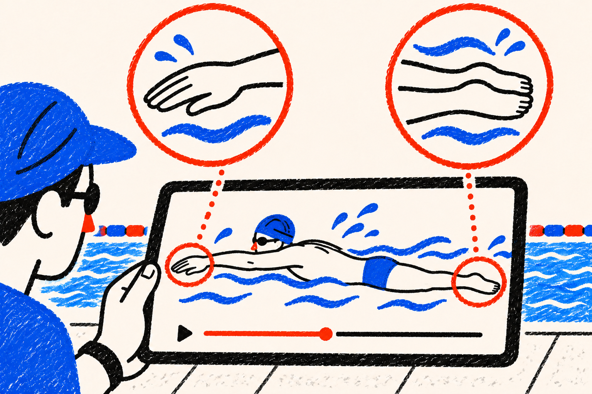
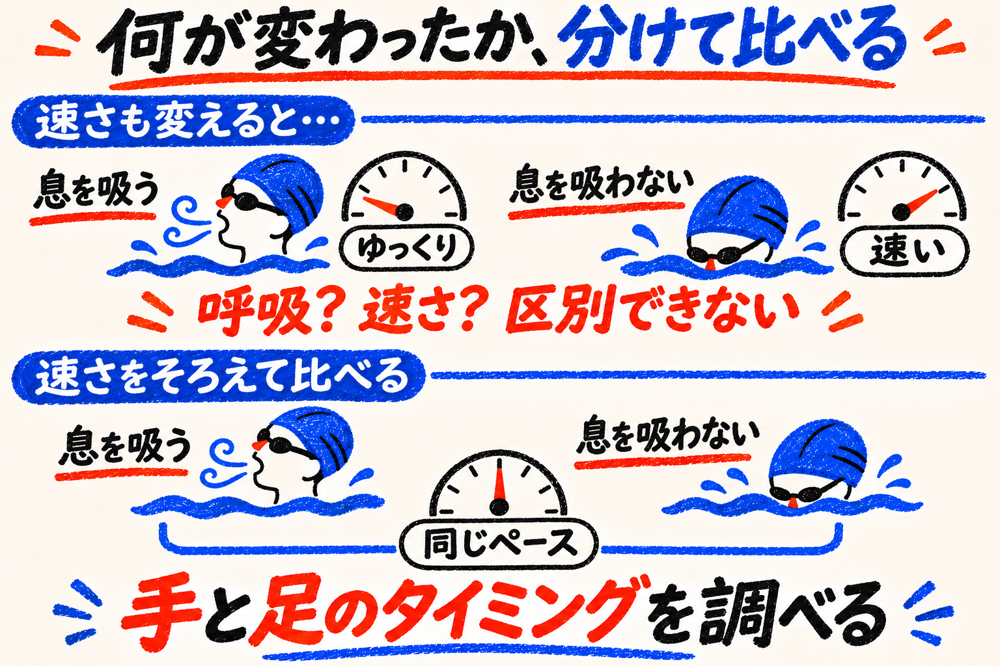
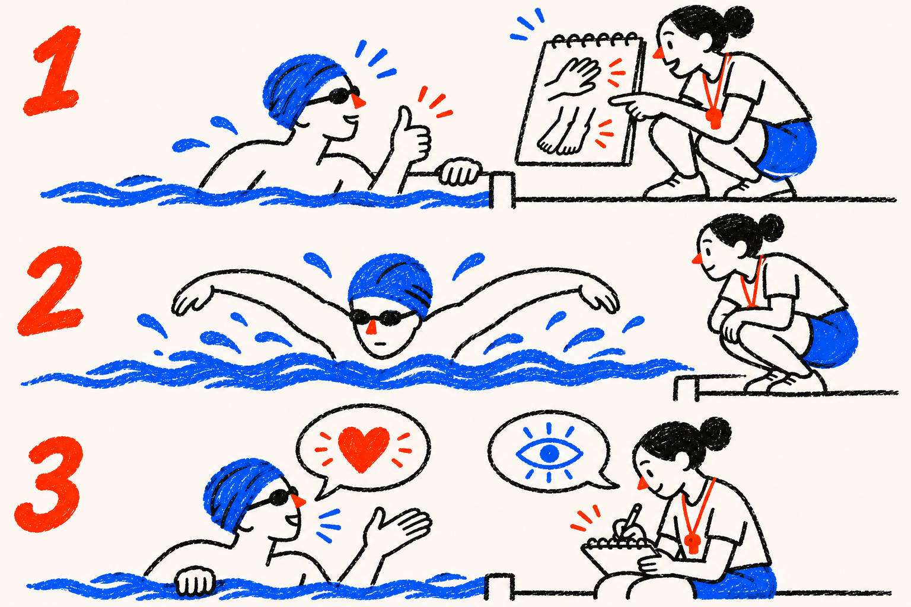

SWIMMING RESEARCH / 24
バタフライの息継ぎ、腕と脚はいつ動く？
顔だけを追うのをやめて、同じ瞬間の手と足を見る
2026年11月14日 公開

「息を吸おうとすると、急に泳ぎが忙しくなる」。バタフライを練習していると、そんな瞬間があるかもしれません。顔を上げることに一生懸命で、さっきまでそろっていた腕と脚が、別々に動いているように感じます。
そこで顔の高さだけを直そうとする前に、見方を少し広げてみましょう。息継ぎは顔だけの仕事ではなく、腕と脚を動かす時間の組み合わせにも関わります。研究では上手な選手でも、息を吸う周期と吸わない周期で、その組み合わせが変わっていました。
今日は「息を吸わなければよい」という話ではありません。必要な呼吸をしながら泳ぐために、どの場面をコーチと一緒に見るとよいのかを考えます。
「腕が一回」の間に、脚はどう動いている？
まず、同じ動きを数えるための始まりと終わりを決めます。バタフライでは、両手が水に入ってから、次に両手が水に入るまでを「腕の一周期」と呼べます。一周期は、一回分の輪のことです。「一回」と聞いて、右腕だけ、左腕だけ、と別々に数えないようにしましょう。
今回の研究が調べたのは、この腕の一周期に、両脚をそろえたキックを二回行う泳ぎです。一回目と二回目は、別の脚という意味ではありません。両脚で行うキックが、時間をずらして二回ある、ということです。
一つの周期を、同じ時計で見る
順番ではなく、同じ周期を見る三つの観点

両手の入水から、次の入水まで。
同じ一周期の中に、両脚のキックが二回。
顔の動きも、手と足と同じ場面で見る。
TOPと同じ青いクレヨン調で、両腕を水上へ戻すバタフライの泳者を描いた挿絵。キックの回数と時点は下の説明で区別します。
ここで大切なのは、回数が合っていれば全部同じ泳ぎ、とはならないこと。歌に合わせて手をたたくときも、二回たたいたという数だけでは、どの音に合ったかは分かりません。泳ぎでも「二回あった」に加え、「腕がどこに来たときだった？」を見る必要があります。
腕だけをずっと追い、次に足だけをずっと追うと、二つの時計を別々に見ているようなものです。まず手が水に入った一場面で、足がどこにあったかを一緒に見ます。図の線は腕一周期を囲むための目印で、理想の秒数を表してはいません。
泳ぎ始めの人が、自分でこの全部を数えながら泳ぐ必要はありません。泳いでいる本人は普段どおりに呼吸をし、見る役の人が一場面を選ぶ。仕事を分けると、泳ぎを必要以上に忙しくせずに済みます。
研究者は、顔の高さだけを比べなかった
Seifertらは、国内の決勝進出者や国際レベルの男子選手12人を調べました。平均年齢は約20歳。選手は25mを、ゆっくりめから速めまで四つのペースで泳ぎました。「400mのペース」などと書かれていますが、この実験で毎回400mを泳ぎ切ったわけではありません。試行の距離は25mです。
選手は前を向いて息を吸う周期と、吸わない周期を交互に泳ぎました。研究者は同じ試行の中からそれぞれ二周期を取り出し、水上と水中の映像をそろえて分析しています。これは研究の比較条件の説明です。読者に呼吸を減らす練習を勧めるものではありません。
同じ映像の、手と足を対応させる

手の入水と、一回目のキックの切り返しを見る。
手の出水と、二回目のキックの切り返しを見る。
一つの動画画面から手と足へ視線を向ける挿絵。赤い丸は観察する場所であり、研究の二つの時点が必ず同時になるという意味ではありません。
見ていたのは、例えば「手が水に入る時点」と「一回目のキックで足が上から下へ向きを変える時点」の間です。別の組では「手が水から出る時点」と「二回目のキックで足が下から上へ向きを変える時点」を比べました。顔が出たかだけでなく、手と足の出来事の間を見たのです。
息を吸う周期では、腕と脚の時点のずれをまとめた値が大きくなる一方、手が水から出る時点と二回目のキックの終わりは、かえって近づいていました。つまり、全部が一斉に遅れるという単純な変化ではありません。入水後と、水から手を出す場面とで変化の仕方が違います。研究の本文
「息継ぎで泳ぎが変わる」と聞くと、何か一つが悪くなると考えがちです。でも研究が映したのは、呼吸という仕事を加えたとき、泳ぎの各部分が時間を分け合っている姿でした。図も優劣の点数ではなく、研究者がどこを対応させたかを示しています。
「速く泳ぐ」と「息を吸う」は、分けて考える
では、手と足の時点をなるべく近づければ、いつでもよいのでしょうか。ここでも条件を一つ足して考える必要があります。同じ人でも、長く泳ぐつもりのペースと、短い距離を速く泳ぐペースでは、一周期の使い方が違うからです。
この研究では、速いペースほど、腕と脚の時点のずれをまとめた値は小さくなる傾向がありました。入水してから水中で手を後ろへ動かし始めるまでの割合なども変わっています。ただし、これは選手が違うペースで泳いだときの観察です。初心者に「間をゼロにしよう」と教える実験ではありません。
たとえば「息を吸いながら楽に泳いだ周期」と「息を吸わずに速く泳いだ周期」を比べると、呼吸と速さの二つが違います。手と足のタイミングが変わっても、どちらの影響なのか区別できません。そこで研究では、同じペースの試行の中から、息を吸う周期と吸わない周期を取り出して比較しました。
呼吸の違いを見るなら、速さをそろえる
何を変え、何をそろえるか

呼吸の有無と泳ぐ速さを両方変えると、タイミングの違いを呼吸だけの影響とは言えない。
同じペースの試行の中で、息を吸う周期と吸わない周期の手足のタイミングを調べる。
研究の比較方法を説明する図です。読者に息継ぎを減らしたり、息を止めて泳いだりする練習を勧めるものではありません。
また、映像で一度きれいにそろったことと、無理なく繰り返し泳げることも同じではありません。息を吸いにくくなっているなら、その形だけを守ろうとしないでください。呼吸と腕と脚を、本人の泳力や泳ぐ距離に合う組み合わせにしていくことが目的です。
研究の12人は、バタフライを習い始めた子どもではありません。そのため、今回の結果を「この時点へ全員合わせる」という処方箋にはしません。使えるのは、顔の上下だけでなく、手と足とペースを一緒に観察するという見方です。
形の一枚ではなく、前後の動きを見る
次の練習では、いきなり腕と脚の両方を変えなくても大丈夫です。バタフライを指導できる人に、「息を吸うとき、手が水から出る場面と足の動きを一緒に見てください」と一つ頼んでみましょう。本人は無理のない普段の呼吸で泳ぎます。
撮影できる施設なら、周囲の人の写り込みや施設のルールを守って映像を使えます。撮影ができなければ、コーチに水面と足の見える位置から観察してもらう方法で構いません。一枚の写真では動く順番は分からないので、その前後まで見るのがポイントです。
見る仕事を、一つずつ分ける

- 1泳ぐ前
呼吸する一周期の、手が出る場面を見ると決める。
- 2泳いでいる間
本人は普段の呼吸。見る人が手と足を追う。
- 3泳いだ後
本人の感じと外から見たことを分けて話す。
1は見る場所を決める、2は泳ぎを見る、3は感じたことと見えたことを分けて話す。水泳者は水中、観察者はプールサイドにいます。
見た後の質問も一つにします。「顔を上げようとしてから手が止まっていた？」「手が出るころ、足はまだ下へ動いていた？」。分からなければ、分からないままコーチに尋ねて大丈夫です。自分の感覚と、外から見えた出来事を区別して話すことが、次の説明を受け取りやすくします。
もし呼吸の場面で慌ただしさが強いなら、距離やペースを無理に保つのではなく、指導者と課題を小さくします。既に楽に呼吸できているなら、研究に合わせるためだけに泳ぎを大きく変える必要はありません。一回の観察で、正しい・間違いを決着させないことも大切です。
研究から分かったこと
- 研究の目的
- 息継ぎと泳ぐペースによって、バタフライの腕と脚の時間の組み合わせがどう変わるかを調べた研究です。
- 何を比べたか
- 男子の高い競技レベルの選手12人が25mを四つのペースで泳ぎ、同じ試行内の呼吸周期と非呼吸周期を比較しました。
- 何が分かったか
- 呼吸周期では全体の時点のずれが大きくなる一方、手が水から出る場面と二回目のキックの終わりは近づきました。
- この記事の答え
- 息継ぎは顔だけの動きではありません。腕と脚の「同じ瞬間」を見ると、呼吸時の泳ぎを理解しやすくなります。
息継ぎをすると、腕と脚の関係が全部同じ方向にずれるわけではありません。離れる時点もあれば、近づく時点もある。顔が上がった一瞬の形だけでは、その泳ぎは説明しきれないのです。バタフライの呼吸は、腕と脚が動き続ける中にあります。
参考文献と確認範囲
- Seifert L, Chollet D, Sanders R. (2010). Does Breathing Disturb Coordination in Butterfly? International Journal of Sports Medicine, 31, 167–173.
大学公開PDFの方法・結果・表を確認。図は原著の転載ではなく測定の考え方を説明する模式図。